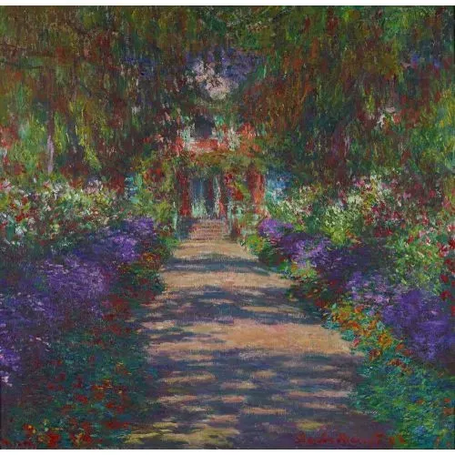

A Pathway in Monet's Garden
Created: 1902
View of a Flower‑Lined Walkway, known as A Pathway in Monet’s Garden – Created by Claude Monet
*A Pathway in Monet’s Garden* is one of Claude Monet’s serene depictions of his beloved garden in Giverny, France. The painting captures a flower‑lined path bathed in soft, natural light, showcasing Monet’s mastery of color, atmosphere, and Impressionist brushwork. His garden served as a lifelong inspiration, and this piece reflects the peaceful beauty and vibrant plant life that defined his later works.
A gentle, sunlit scene from Monet’s garden at Giverny, A Pathway in Monet’s Garden shows his love for capturing nature as it changes with light and season. The arching plants, soft colors, and dappled shadows create a peaceful atmosphere, almost like stepping into the garden yourself. It reflects Monet’s lifelong devotion to painting the world just outside his door.
Type: Impressionist Landscape Painting